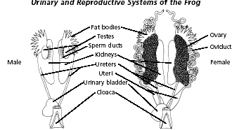
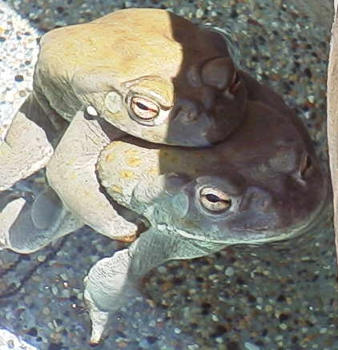

The
Sonoran Desert Toad
The
Sonoran Desert Toad
The
Sonoran Desert Toad
Bufo alvarius
Breeding

Bufo alvarius spend most of their lives buried underground and they are very keen to the effect of the Earth's cycle and their own natural rhythm. They will not breed in captivity without the aid of injected hormone. For those interested in the induction of breeding activity by experimental means and under laboratory conditions, outside of the normal breeding season, please consult the following:
Rugh, Roberts. 1962. Experimental Embryology Techniques and Procedures. 4. Induced Breeding. pp.91-103. Minneapolis, Burgess Pub. Co. - (14 pages)
A Master's thesis from ASU where a young scientist induced breeding in B. alvarius so he could study its first 20 phases of development:
Hill, Willie James. 1961. The developmental pattern of the Colorado River toad (Bufo alvarius Girard) from stage one through twenty. Thesis: (M.S.)--Arizona State University, 1961--Biology. - (35 pages)
If you are successful in your breeding efforts, then you will need additional information regarding the correct "pond" water, temperature, and food for your growing tadpoles. See the excellent books by Chris Mattison such as Keeping and Breeding Amphibians, and The Care of Reptiles and Amphibians in Captivity, (especially pp.133-136.)
Additional information on breeding can be gleaned here: Recommendations for the Care of Amphibians and Reptiles in Academic Institutions.
